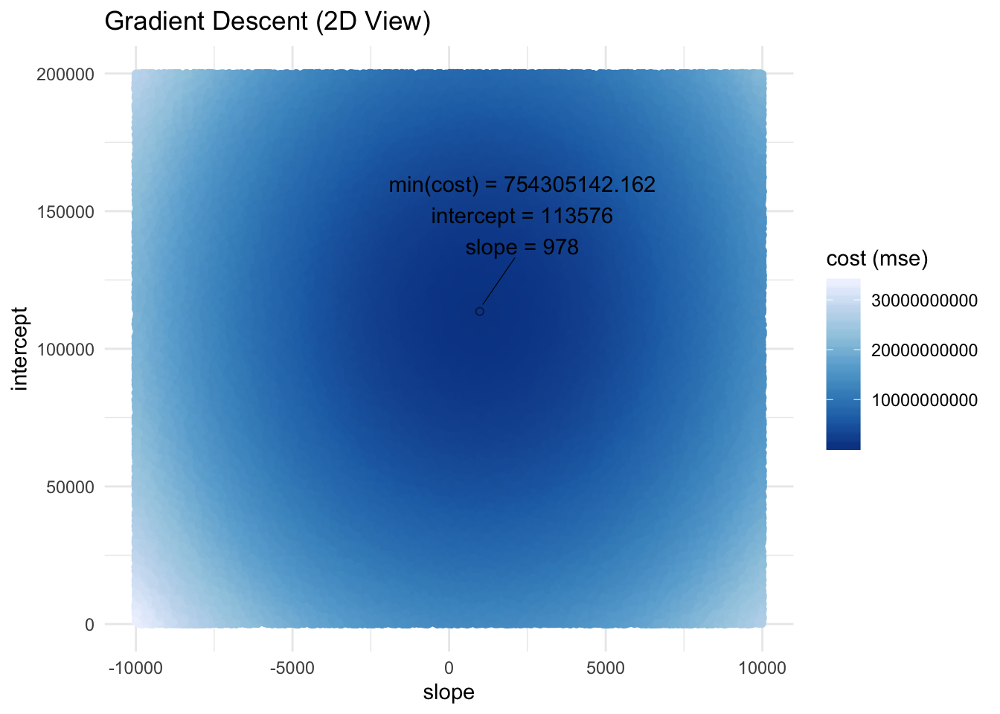

Solving Ordinary Least Squares (OLS) Regression using Gradient Descent
Ekarin Eric Pongpipat, M.A.
Original Post: 6/10/2019 Modified Post: 6/17/2019
Already familiar with OLS regression and wanted to learn about gradient descent? This blog post will provide a brief tutorial on solving OLS using gradient descent using R.
Remember that the equation for OLS is:
\[
\tag{1}
Y = X\beta + \epsilon
\]
where \(Y\) is a column-wise vector of DVs, \(X\) is a matrix of IVs, \(\beta\) is a column-wise vector of regression coefficients, and \(\epsilon\) is a column-wise vector of error.
obtain_cost <- function(y, x, b) {
y_pred <- x %*% b
e <- y - y_pred
se <- e^2
mse <- mean(se)
return(mse)
}
Let’s say that we are interested in understanding if the number of years a professor has had their Ph.D. is associated with a higher 9-month academic salary.
R Libraries
First, let’s load some packages.
packages <- c("tidyverse", # data manipulation and visualization
"carData", # data set to obtain professor's 9-month salary
"broom", # nice table format of cofficients from lm()
"ggrepel", # ggplot extension to repel text and extra features
"glue", # concatentate strings and alias
"plot3D", # plot 3D figures
"RColorBrewer" # load color palettes
)
xfun::pkg_attach(packages, message = F)
n_round <- 3
Data
Then, let’s define our independent variable (IV: yrs.since.phd) as x and our dependent variable (DV: salary) as y using the Salaries dataset in the carData package.
Starting at any position (e.g., intercept and slope combination), gradient descent takes the partial derivative of each coefficient (\(\beta\)) from the cost function (MSE) and moves (or descends) in the direction that will continue to minimize the cost (or gradient) function.
# random sample of possible intercepts and slopes
# then calculate cost function (mse) for each intercept and slope combination
n_sample <- 200000
df_gd <- tibble(
int = sample(seq(0, 200000), n_sample, T),
slope = sample(seq(-10000, 10000), n_sample, T)
) %>%
rowwise() %>%
mutate(cost = obtain_cost(y, x, b = c(int, slope)))
scatter3D(x = df_gd$int,
y = df_gd$slope,
z = df_gd$cost,
xlab = "intercept",
ylab = "slope",
zlab = "cost (mse)",
col = ramp.col(col = sort(RColorBrewer::brewer.pal(9, "Blues"), decreasing = F),
n = length(unique(df_gd$cost))),
colkey = F,
phi = 10,
theta = 45,
main = "Gradient Descent (3D View)"
)
# plot intercept and slope, and color by cost (mse)
# highlight and label min(cost)
ggplot(df_gd, aes(slope, int, color = cost)) +
geom_point() +
geom_point(data = subset(df_gd, cost == min(cost)), color = "black", shape = 21, alpha = .5) +
geom_text_repel(
data = subset(df_gd, cost == min(cost)),
mapping = aes(label = paste0("min(cost) = ", round(cost, n_round), "\nintercept = ", round(int, n_round), "\nslope = ", round(slope, n_round))),
nudge_y = 30000,
nudge_x = 1000,
box.padding = 1.5,
point.padding = 0.5,
segment.size = 0.2,
segment.color = "black",
color = "black"
) +
labs(
title = "Gradient Descent (2D View)",
y = "intercept",
color = "cost (mse)"
) +
scale_color_distiller(palette = "Blues") +
theme_minimal()

We can see from these random samples of intercepts and slopes that the lowest cost is 754467038.308 with an intercept of 113693 and slope of 1019. So no matter where we start (any intercept and slope combination), we should descend and ultimately end up with the lowest cost value of 754467038.308.
Partial Derivatives
What are partial derivatives?
Partial derivatives allow us to obtain a slope at any point that is specific to a variable on any function (or line). In our case, partial derivatives allow us to obtain a slope at any specific \(\beta\) on the cost function of MSE, which can be denoted as \(\frac{\partial MSE}{\partial \hat{\beta}}\).
To calculate the partial derivative, we repeat the following for each term:
Set the term without \(\beta\) to 0
Multiply the term by the exponent of \(\beta\)
Subtract 1 from the exponent of \(\beta\)
and simplify.
\[
\tag{6}
\begin{align}
\frac{\partial MSE}{\partial \hat{\beta}} & = 0 - \frac{1*2YX\beta^0}{N} + \frac{2X^2\beta^1}{N} \\
& = \frac{-2YX+2X^2\beta}{N} \\
& = \frac{-2X(Y-X\beta)}{N} \\
& = \frac{-2X\epsilon}{N}
\end{align}
\] Note: We set the term without \(\beta\) to 0 in step 1 because that term can be thought of as having \(\beta^0\), which equals 1. When we then multiply the term by the exponent of 0, we end up with a term of 0.
Update Coefficients
We can then use the information from partial derivatives to update the coefficients (\(\beta\)) so that coefficients (\(\beta\)) change and descend into a lower MSE.
How do we update the coefficients?
We can update the coefficients \(\beta\) by subtracting the partial derivatives multiplied by the learning rate.
A \(\beta\) lower than it should be will have a negative slope and when we subtract the partial derivative (\(\frac{\partial MSE}{\partial \hat{\beta}}\)) from the old \(\beta\), the new \(\beta\) will then be less negative. Conversely, a \(\beta\) higher than should be will have a positive slope and when we subtract the partial derivative (\(\frac{\partial MSE}{\partial \hat{\beta}}\)), the new \(\beta\) will be less positive. When we are at the lowest cost value, the partial derivative (\(\frac{\partial MSE}{\partial \hat{\beta}}\)) will be 0 and \(\beta\) will stop updating.
What is the learning rate?
The learning rate determines how fast the coefficients update (descends). A higher learning rate descends quickly but may be susceptible to skipping or moving past the global minima. A lower learning rate is more precise but is slower as it takes more time to compute.
update_b <- function(y, x, b, lr) {
y_pred <- x %*% b
e <- y - y_pred
derivatives <- (-2 * t(x) %*% e ) / nrow(x)
b <- b - derivatives * lr
return(b)
}
Train
Now let’s train the data, arbitrarily starting the coefficients at 0 and a learning rate of 0.0001 for 50,000 iterations.
# set number of iterations
iter <- 50000
# set learning rate
lr <- 0.0001
# set initial values of coefficients
b <- NULL
for (i in 1:ncol(x)) {
b[i] <- 0
}
b <- as.matrix(b)
cat(paste("iteration", "intercept", "slope", "cost\n",
"0", round(b[1], n_round), round(b[2], n_round), round(obtain_cost(y, x, b), n_round)))
# set initial training dataset
df_train <- tibble(
iter = NA,
int = NA,
slope = NA,
cost = NA,
.rows = iter
)
# train and save training history using for loop
for (i in 1:iter) {
b <- update_b(y, x, b, lr)
df_train$iter[i] <- i
df_train$int[i] <- b[1]
df_train$slope[i] <- b[2]
df_train$cost[i] <- obtain_cost(y, x, b)
if (i %in% round(seq(1, iter, length.out = 10), 0)) {
cat(paste("\n", round(i, n_round), round(b[1], n_round), round(b[2], n_round), round(obtain_cost(y, x, b), n_round)))
}
}
We can see that most of the iterations were spent optimizing the slope with minimal changes to the intercept as well as the cost (MSE) up until around iteration 1000. Then, the optimal intercept was found within a few iterations, which dramatically reduced cost (MSE).
Compare Gradient Descent and lm()
We can compare the results of gradient descent with lm() to ensure that we did this correctly. We should approximately have the same results within rounding error because OLS is a convex shape with only one global minima.
glue("Cost using GD: {round(df_min$cost, n_round)}\nCost using lm(): {round(glance(model)$sigma^2, n_round)}")
## Cost using GD: 754279219.343
## Cost using lm(): 758098327.9
We can see that solving OLS regression using gradient descent produced a lower cost function (MSE) than by using lm(). The lower MSE using gradient descent was produced from using a smaller intercept. Since MSE was smaller using gradient descent, the standard error was also smaller using gradient descent and subsequently a larger statistic and lower p-value.
Figure
fig_gd <- ggplot(mapping = aes(x[, 2], y)) +
geom_point(alpha = 0.5) +
geom_abline(intercept = coef[1], slope = coef[2], size = 1) +
theme_minimal() +
labs(
title = "Solved using Gradient Descent",
x = "yrs.since.phd",
y = "salary"
)
fig_lm <- ggplot(mapping = aes(x[, 2], y)) +
geom_point(alpha = 0.5) +
geom_smooth(color = "black", method = "lm", se = F) +
theme_minimal() +
labs(
title = "Solved using lm()",
x = "yrs.since.phd",
y = "salary"
)
gridExtra::grid.arrange(fig_gd, fig_lm, nrow = 1)
However, since the range of salary is so large, each method produced nearly identical graphs.
Acknowledgements
@bfortuner for his gradient descent in python tutorial.
@mychan24 for her helpful feedback and suggestions to this blog.
@praxling for her proofing and feedback to this blog.